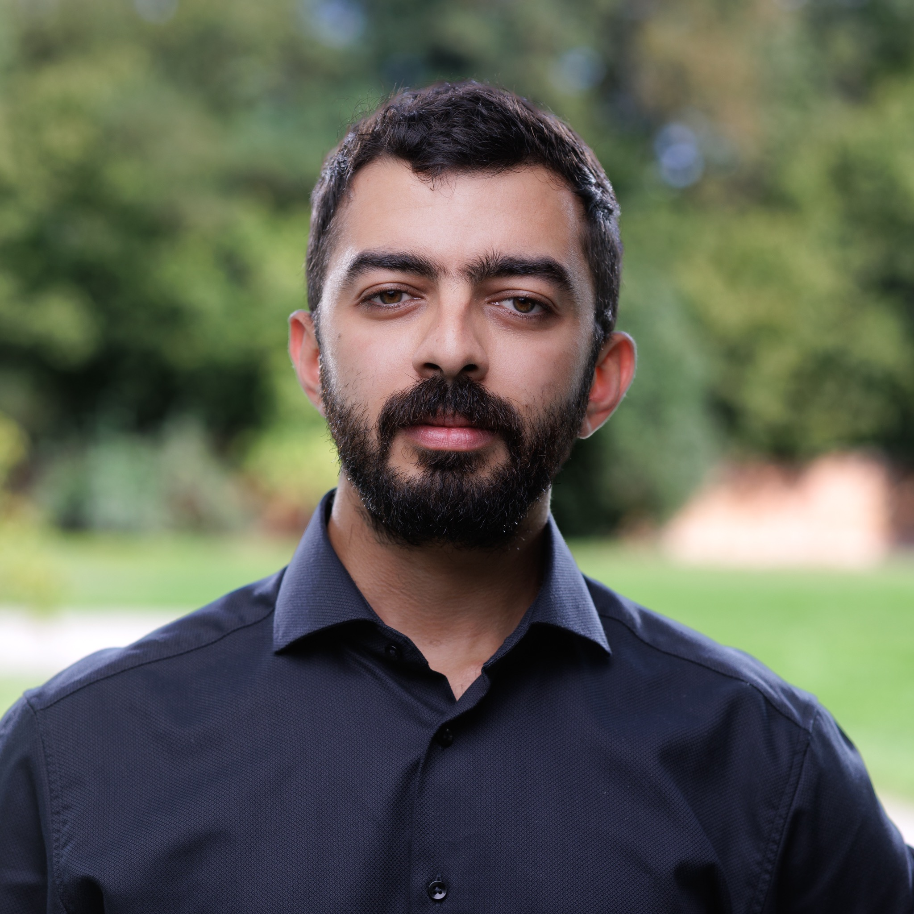

Elsewhere
How I see the world outside work
Movement has been a recurring part of my life. I like cities, languages, photography, long walks and the small details that make places feel different.

Travel is part of how I learn.
I do not see travel only as a break from work. It is one of the ways I understand how people live, organise public space and relate to institutions.
I am especially drawn to cities, analogue photography, languages and places with layers of history.
Damascus → Sofia → Kraków → Siena → Warsaw → ?
I like keeping the last arrow open.